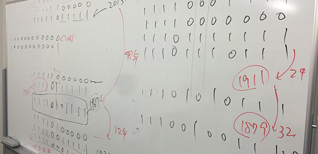
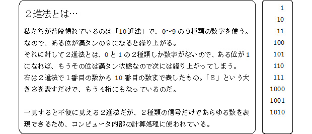
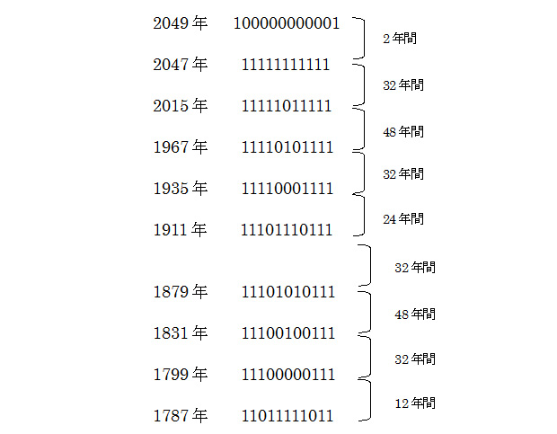

西暦の数字を見て思ふ
年が明けて一週間も経っていて遅ればせながらですが、新年明けましておめでとうございます。今年もＡＲＣＳブログを宜しくお願いします。
さて、今まさに大学センター入試や私立高校入試が直前ということで、塾業界は大忙しだと思われるでしょうね。
でも心理的にはそうでもない。
要するに生徒も私たちも、この時期はあっという間すぎて忙しいと感じるヒマもないのです。
舞台の演技、ピアノの発表会など、それが始まる直前までは心理的な圧迫がありますが、始まってしまえばあっという間。これと同じです。
それはさておき、毎年この時期になると思い浮かぶのが、西暦を使った整数問題。
今年は2015年なので、この数字にちなんだ問題がどこかの入試に出るかもしれない、などと考えるわけです。
冷静に考えれば、こんなことを思うのは受験指導をする数学講師だけであり、まさに職業病。
ふとそんなことを考えて苦笑いしてしまうのでした。
2015はレアなのか？
さて、この2015という数字ですが、どんな性質を持っているのか、まずは恒例の素因数分解（その数を素数のみのかけ算で表すこと）をやってみます。
2015＝5×13×31
ほほぅ…、そうきましたか。
なかなか割れることに気づきにくい13や31という素数（１とその数自身でしか割り切れない数）が含まれていますね。
ん～、イケてない！
ここからの広がりが見えてこない。
来年の2016だったら、「2016＝25×32×7」となり、いろんな数で割れるので倍数・約数の問題など、どんなふうにも料理できる良い素材なんだけどなぁ。
それに引き換え2015ときたら……
そんなふうに見捨てようとした刹那、神のお告げが！
──２進数にしてみるのじゃ──
つまり、「０」と「１」だけで表すという、２進法に直せと？

ということで2015を２進法にすると…
ドドン！ 11111011111
これは…！
なんと美しい左右対称な形だろうか。
（※ちなみに10進法を２進法に書き換える、またはその逆の作業方法については今回は省略します。調べてみて下さい）
私はこのような数を『対称数』と勝手に名づけました。
それで結論から言うとですね、この対称数になるのは２進法といえど割とレアだということがわかりまして。
直近で対称数であった年を調べてみると、1967年（11110101111）なので、48年ぶりの対称数年に当たるのが今年、2015年というワケです。
一応予想してみようかな、ぐらいで…
さて、2015年前後の対称数年を少し書きます。

むむ…、驚くような法則は特にないようですが、一応次のように予想しました。
- ●対称数の間隔は最短で２年間（桁数が増える前後）
- ●2015年現在まで限定であれば、対称数の最長間隔は48年間
（※↑一応自分なりの結論ですが、検証してくれる人募集！） - ●2048年以降の12桁では、最長間隔が96年になる
（※↑これも怪しい…あ～頭こんがらがってきた 汗）
正直、疲れました（苦笑）。
新年早々私は何をやってるんだっていう感じですが、今年も宜しくお願いします！